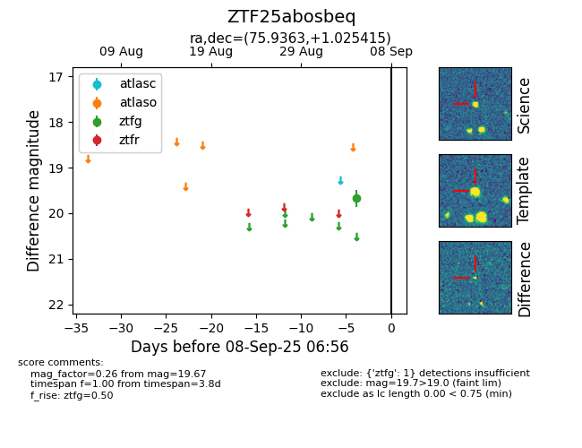

FINK: ZTF25abosbeq
Lasair: ZTF25abosbeq
ALeRCE: ZTF25abosbeq
ZTF25abosbeq (ztf,fink)
equatorial (ra, dec) = (75.9363,+1.02541)
galactic (l, b) = (198.9263,-23.25089)

last ztfg=19.67
1 ztfg detections